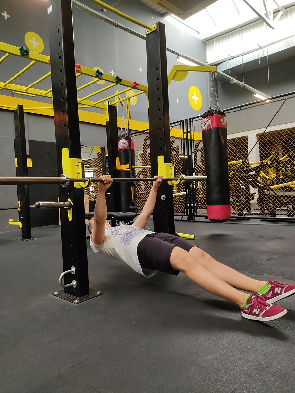

Rozbudowuje głównie mięśnie klatki piersiowej, na drugim planie jest triceps i mięśnie naramienne.
Ważne jest także rozciąganie mięśni klatki piersiowej aby utrzymać poprawną postawę.
1. Pozycja startowa:
ważnym punktem jest ustawienie łopatek. Powinny być w depresji i retrakcji ( ściąganie i
wycofanie ich ku dołowi [pierwsze zdjęcie]),
chwytamy sztangę pewnie u nasady nadgarstka, na szerokość trochę większą niż szerokość barków,
stoimy stabilnie na nogach. Nie można leżeć bezwładnie na ławce. Pośladki i plecy muszą być
napięte,
2. Prawidłowy ruch:
zachowując pozycję startową bierzemy wdech i opuszczamy sztangę do klatki na wysokość linii
sutkowej,
łokcie prowadzimy tak żeby między ręką a tułowiem był kąt mniej więcej 45 stopni,
przez cały ruch łopatki muszą być spięte żeby nie obciążać zbytnio barków ( może to prowadzić do
ciężkich kontuzji ),
powietrze wypuszczamy po zakończeniu ruchu.
Wiosłowanie
Wiosłowanie jest fundamentalnym ćwiczeniem na rozbudowę pleców. Istnieje wiele wersji tego ćwiczenia
lecz my skupimy się na podstawowym wariancie “Wiosłowanie sztangą w opadzie podchwytem”.
1.Pozycja startowa:
łapiemy sztangę podchwytem, mniej więcej na szerokość barków.
uginamy lekko kolana i podnosimy sztangę na ich wysokość ,
plecy muszą być ustawione neutralnie ( bez garbienia się ), pomoże w tym mocno napięty brzuch.
2.Prawidłowy ruch:
przez cały ruch pozostajemy w tej samej pochylonej pozycji,
biorąc wdech ciągniemy sztangę do bioder ściągając łopatki,
staramy się ruch prowadzić z pleców, a nie z łokcia. Spowoduje to mocniejszą pracę pleców i
odciąży biceps.
po przytrzymaniu sztangi przy biodrach opuszczamy sztangę z wydechem.

Podciąganie australijskie
Podciąganie australijskie jest dobrym ćwiczeniem przed zwykłym podciąganiem na drążku.
Jest to ćwiczenie które rozbuduje plecy i biceps. Im niżej jest drążek/sztanga tym ciężej wykonać
ćwiczenie, można progresować obniżając drążek/sztangę.
1. Pozycja startowa:
chwytamy drążek/sztangę szerzej niż na szerokość barków,
przyjmujemy pozycję odwróconej deski,
należy mocno napiąć brzuch, łopatki oraz pośladki,
jeśli podczas pozycji startowej nogi nam odjeżdżają najlepiej zaprzeć się o ciężki (20kg) talerz
lub poprosić kogoś by stanął i przyblokował nasze stopy.
2. Prawidłowy ruch:
przyciągamy klatkę piersiową do drążka/sztangi i przytrzymujemy w górze ruchu,
łokcie powinny iść blisko tułowia,
staramy się utrzymać napięcie w całym ciele i kontrolować ruch.
Przysiad
Przysiad jest ćwiczeniem wielostawowym który rozwija nie tylko mięśnie nóg ale też mięśnie pleców i
brzucha. Poprawia ono mobilność oraz równowagę.
1. Pozycja startowa:
szerokość chwytu jest zależna od każdego z nas. Należy mocno ściskać sztangę, spowoduje to że
nadgarstki będą bardziej odporne na obciążenie,
sztangę ustawiamy na wysokości linii barków,
aby ruch był dobry i kontrolowany należy napiąć brzuch i plecy,
stopy ustawiamy na szerokość barków i kierujemy je na zewnątrz.
2. Prawidłowy ruch:
pierwszym krokiem jest nabranie powietrza do przepony i napięcie brzucha,
ruch zaczynamy od wypięcia bioder, następnie uginamy kolana,
kolana kierujemy na zewnątrz, zminimalizuje to ryzyko kontuzji i wzmocni nasz przysiad,
staramy się zejść do pozycji gdzie nasza kość udowa jest równolegle do podłoża
powietrze wypuszczamy dopiero po wykonanym powtórzeniu. Jeśli zrobimy to na dole ruchu stracimy
napięcie w przeponie i nasz odcinek lędźwiowy jest narażony na kontuzję.
Martwy ciąg
Martwy ciąg jest ćwiczeniem kompleksowym, rozwija całe całe ciało. Jest też jednym z najbardziej
kontuzjogennych ćwiczeń dla początkujących osób nie znających zasad którymi trzeba się kierować.
1. Pozycja startowa:
stawiamy stopy na twardym podłożu żeby stabilnie stać,
łapiemy sztangę nachwytem szerzej niż rozstaw barków,
sztangę przyciągamy do piszczeli,
nabieramy dużo powietrza do przepony, napinamy brzuch i plecy żeby usztywnić tułów.
2. Prawidłowy ruch:
przy napiętym tułowie podnosimy sztangę prowadząc ją po nogach, aby sztanga była jak najbliżej
osi ciała,
nasze ręce mają być jak haki, nie wolno ich zginać ( możliwe jest wtedy zerwanie bicepsa ),
unikamy wygięcia kręgosłupa w odcinku lędźwiowym, ponieważ jest bardzo niebezpieczne dla nas,
ruch kończymy napięciem mięśni pośladkowych,
sztangę opuszczamy zgięciem bioder, a gdy sztanga jest już poniżej linii kolan wtedy je zginamy.